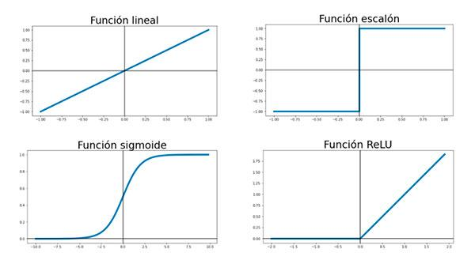
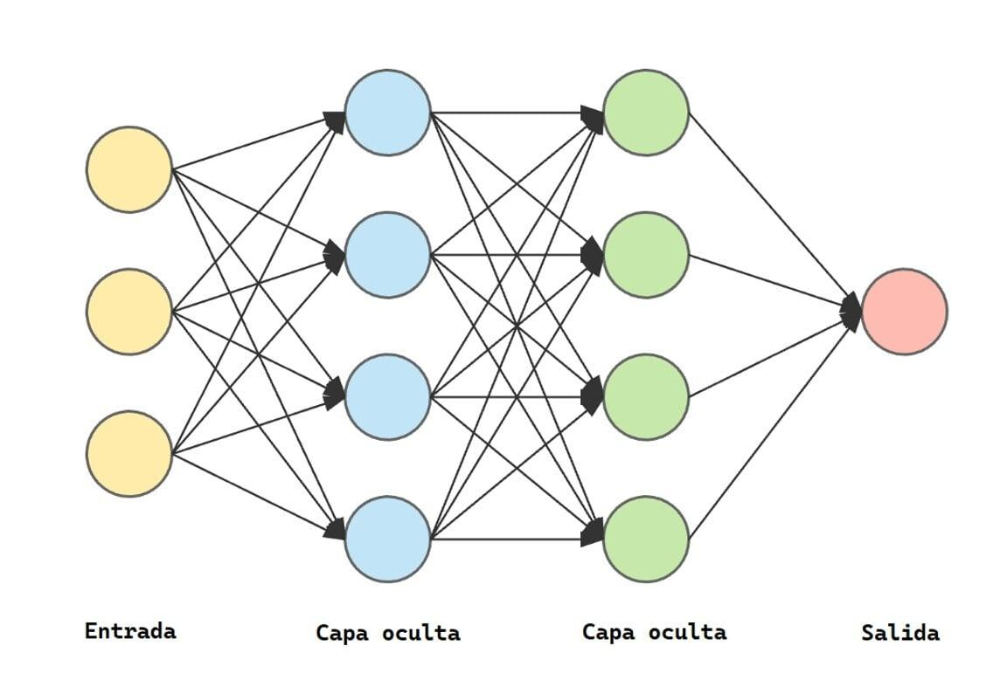
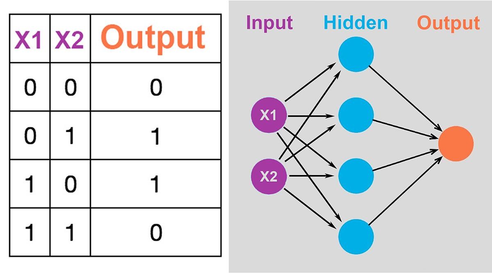

Introducción a la unidad
Las redes neuronales artificiales (RNA) son modelos computacionales inspirados, de manera simplificada, en el funcionamiento de las neuronas del cerebro humano. Aprenden patrones a partir de datos para clasificar información, reconocer imágenes, hacer predicciones y resolver problemas complejos.
En el cómputo suave son importantes porque permiten trabajar con información incompleta, imprecisa o difícil de describir mediante reglas tradicionales.
Ejemplos de aplicaciones cotidianas
📱 Reconocimiento facial
Desbloqueo de teléfonos.
✉️ Detección de spam
Clasificación de correos no deseados.
🏠 Predicción
Estimación de precios de viviendas.
🎙️ Voz
Reconocimiento de instrucciones habladas.
🩻 Medicina
Análisis de imágenes médicas.
🎬 Recomendaciones
Sugerencias de películas, música y productos.
Objetivo de aprendizaje
3.1. Fundamentos de las redes neuronales
3.1.1. ¿Qué es una red neuronal artificial?
Una red neuronal artificial es un modelo matemático y computacional compuesto por unidades llamadas neuronas artificiales, conectadas entre sí. Cada neurona recibe datos, realiza operaciones matemáticas y genera una salida que puede ser utilizada por otras neuronas.
Una red aprende modificando los valores de sus conexiones, conocidos como pesos, para reducir la diferencia entre sus resultados y las respuestas esperadas.
3.1.2. Inspiración biológica: la neurona humana
El funcionamiento de las RNA se inspira en algunos elementos de las neuronas biológicas.
| Elemento biológico | Función |
|---|---|
| Dendritas | Reciben señales de otras neuronas. |
| Cuerpo celular o soma | Integra la información recibida. |
| Núcleo | Contiene información genética y regula la actividad celular. |
| Axón | Transmite impulsos nerviosos. |
| Terminales sinápticas | Permiten la comunicación con otras células. |
| Sinapsis | Zona de comunicación entre neuronas. |
Relación con una neurona artificial
| Neurona biológica | Neurona artificial |
|---|---|
| Dendritas | Entradas de datos. |
| Señales nerviosas | Valores numéricos de entrada. |
| Sinapsis | Conexiones entre neuronas. |
| Fuerza de conexión | Peso. |
| Integración de señales | Suma ponderada. |
| Activación neuronal | Función de activación. |
| Señal de salida | Resultado de la neurona. |
3.1.3. Estructura de una red neuronal artificial
1. Capa de entrada
Recibe los datos. Para estimar una vivienda: superficie, habitaciones, antigüedad y ubicación.
2. Capas ocultas
Procesan la información e identifican relaciones y patrones. Puede haber una o varias capas.
3. Capa de salida
Entrega el resultado: precio estimado, clasificación de spam o identificación de una imagen.
3.1.4. Componentes de una neurona artificial
Una neurona recibe valores de entrada, multiplica cada entrada por su peso, suma los resultados y agrega un sesgo; finalmente aplica una función de activación.
Donde: xi = valor de entrada; wi = peso asociado; b = sesgo (bias); n = número de entradas; z = suma ponderada antes de la activación.
f representa la función de activación.
Ejemplo práctico: calificación ponderada
Entradas: tareas x₁ = 8 y examen x₂ = 9. Pesos: w₁ = 0.4 y w₂ = 0.6. Sesgo b = 0.
Si se utiliza una función de activación lineal, la salida es 8.6; en este ejemplo representa una calificación ponderada.
Pesos y sesgo
- Pesos (weights): determinan la importancia de cada entrada. Por ejemplo, el examen podría tener un peso mayor que la asistencia.
- Sesgo (bias): valor adicional que desplaza el resultado de la suma ponderada y permite ajustar mejor la neurona.
Los pesos y sesgos son parámetros que el algoritmo modifica durante el entrenamiento.
3.1.5. Funciones de activación
Una función de activación transforman la suma ponderada y determinan qué valor transmite la neurona a la siguiente capa.

| Función | Características | Uso común |
|---|---|---|
| Lineal | La salida debe ser igual a la señal de entrada. No transforma la entrada, sino que la transmite sin cambios | Problemas de regresión en los que queremos prever un valor numérico. |
| Escalón | Devuelve 0 o 1 según un umbral. | Perceptrón clásico. |
| Sigmoide | Produce valores entre 0 y 1. | Clasificación binaria y probabilidades de salida. |
| Tangente hiperbólica (tanh) | Produce valores entre −1 y 1. | Algunas redes con salidas centradas en cero. |
| ReLU | Devuelve cero para valores negativos y conserva los positivos. | Capas ocultas de muchas redes profundas. |
| Softmax | Convierte varios valores en probabilidades que suman 1. | Clasificación multiclase. |
Función escalón
Función sigmoide
Función ReLU
Ejemplo: si z = −3, ReLU devuelve 0. Si z = 5, devuelve 5.
3.1.6. ¿Cómo aprende una red neuronal?
- Preparación de datos: recopilar y organizar ejemplos.
- Inicialización: asignar valores iniciales a pesos y sesgos.
- Propagación hacia adelante: ingresar datos y calcular predicciones.
- Cálculo del error: comparar predicciones con respuestas correctas.
- Actualización de parámetros: modificar pesos y sesgos para reducir el error.
- Repetición: continuar durante varias iteraciones o épocas.
- Evaluación: comprobar respuestas ante datos que no se usaron para entrenar.
Entrenamiento
Proceso mediante el cual la red aprende.
Época
Una pasada completa por todos los ejemplos del conjunto de entrenamiento.
Error o pérdida (loss)
Medida de qué tan diferentes son predicciones y valores esperados.
Generalización
Capacidad de responder correctamente ante datos nuevos.
3.2. Perceptrón y aprendizaje supervisado
3.2.1. ¿Qué es un perceptrón?
El perceptrón es uno de los modelos más sencillos de una red neuronal artificial. Fue propuesto por Frank Rosenblatt en 1957 y permite resolver problemas de clasificación binaria cuando los datos pueden separarse mediante una frontera lineal.
Recibe entradas, las multiplica por sus pesos, suma los resultados, agrega un sesgo y aplica una función de activación.
Donde: xi son las entradas; wi los pesos; b el sesgo; f la función de activación; y la salida.
3.2.2. Funcionamiento del perceptrón: ejemplo educativo
Una institución desea clasificar si un estudiante aprueba o no una evaluación, considerando calificación de actividades y examen. Para simplificar: 1 = cumple el criterio; 0 = no cumple.
Entradas: x₁ = actividades y x₂ = examen. Pesos: w₁ = 0.5 y w₂ = 0.5. Sesgo: b = −0.75.
Función escalón: si z ≥ 0, la salida será 1; de lo contrario, será 0.
| Actividades | Examen | Resultado z | Salida |
|---|---|---|---|
| 0 | 0 | −0.75 | 0 |
| 0 | 1 | −0.25 | 0 |
| 1 | 0 | −0.25 | 0 |
| 1 | 1 | 0.25 | 1 |
En este ejemplo, el estudiante únicamente aprueba cuando cumple ambos criterios.
3.2.3. ¿Qué es el aprendizaje supervisado?
Es una técnica de aprendizaje automático en la que la red recibe ejemplos que incluyen entradas y etiquetas o respuestas esperadas. La red realiza predicciones y las compara con las respuestas esperadas para ajustar sus parámetros.
Ejemplo: identificación de spam.
| Correo | Enlaces sospechosos | Remitente desconocido | Etiqueta |
|---|---|---|---|
| Correo 1 | 1 | 1 | Spam |
| Correo 2 | 0 | 0 | No spam |
| Correo 3 | 1 | 0 | Spam |
| Correo 4 | 0 | 1 | No spam |
La etiqueta es la respuesta correcta que el modelo debe aprender a predecir.
3.2.4. Entrenamiento del perceptrón
El perceptrón puede aprender mediante una regla de actualización de pesos:
Para el sesgo:
Donde: w = peso; η = tasa de aprendizaje; t = salida esperada; y = salida obtenida; x = entrada.
Ejemplo de actualización
Entradas x₁ = 1 y x₂ = 1; salida esperada t = 1; salida obtenida y = 0; tasa η = 0.1; pesos actuales w₁ = 0.2 y w₂ = 0.3.
Los pesos aumentan porque la salida obtenida fue menor que la esperada. El proceso continúa con otros ejemplos hasta que el perceptrón aprenda la clasificación, si el problema es linealmente separable.
3.2.5. Limitaciones del perceptrón simple
El perceptrón simple solo puede aprender problemas linealmente separables: clases que pueden separarse mediante una línea recta en dos dimensiones, un plano en tres dimensiones o un hiperplano en dimensiones superiores.
Compuerta lógica XOR
| Entrada A | Entrada B | Salida XOR |
|---|---|---|
| 0 | 0 | 0 |
| 0 | 1 | 1 |
| 1 | 0 | 1 |
| 1 | 1 | 0 |
El perceptrón simple no puede aprender correctamente XOR porque sus clases no pueden separarse mediante una sola línea recta. Esta limitación motivó el desarrollo de redes neuronales multicapa.
3.3. Redes multicapa y algoritmos de entrenamiento (backpropagation)
3.3.1. ¿Qué es una red neuronal multicapa?
Una red neuronal multicapa contiene una capa de entrada, una o varias capas ocultas y una capa de salida. A diferencia del perceptrón simple, puede aprender relaciones más complejas y resolver problemas no linealmente separables, como XOR.

| Capa | Descripción | Ejemplo |
|---|---|---|
| Entrada | Recibe los datos iniciales. | Dos valores binarios: A y B. |
| Oculta 1 | Identifica relaciones entre las entradas. | Procesa combinaciones de A y B. |
| Oculta 2 | Combina características aprendidas. | Genera representaciones más complejas. |
| Salida | Produce la predicción final. | Resultado 0 o 1. |
3.3.2. Diferencias entre perceptrón simple y red multicapa
| Característica | Perceptrón simple | Red multicapa |
|---|---|---|
| Capas ocultas | No tiene. | Puede tener una o varias. |
| Complejidad | Baja. | Variable, puede ser alta. |
| Problemas lineales | Sí. | Sí. |
| Problemas no lineales | No puede resolverlos en general. | Puede resolverlos. |
| Entrenamiento | Regla de actualización del perceptrón. | Algoritmos como backpropagation. |
| Ejemplo | Compuerta AND. | Compuerta XOR y reconocimiento de imágenes. |
3.3.3. ¿Qué es backpropagation?
Backpropagation, o retropropagación del error, es un procedimiento para entrenar redes neuronales multicapa. Calcula cómo contribuye cada peso al error de la predicción y utiliza esa información para ajustar pesos y sesgos.
- La red recibe los datos.
- Calcula una predicción.
- Compara la predicción con la respuesta correcta.
- Calcula el error.
- Propaga ese error desde la salida hacia las capas anteriores.
- Ajusta los pesos y sesgos.
- Repite el proceso para mejorar las predicciones.
3.3.4. Etapas del algoritmo backpropagation
Etapa 1. Inicialización de pesos y sesgos
Se asignan valores iniciales a los pesos y sesgos. Generalmente se utilizan valores pequeños, seleccionados mediante métodos de inicialización.
Etapa 2. Propagación hacia adelante (forward propagation)
Los datos pasan desde la capa de entrada hasta la de salida. Cada neurona calcula:
a es la salida o activación de la neurona.
Etapa 3. Cálculo del error
La red compara su predicción con el resultado esperado. Una función de pérdida sencilla es el error cuadrático medio (MSE):
yi es el valor esperado, ŷi el valor predicho y n la cantidad de ejemplos. Cuanto menor sea el MSE, menor será la diferencia cuadrática promedio entre predicciones y valores esperados.
Etapa 4. Retropropagación del error
El algoritmo calcula derivadas de la función de pérdida respecto a pesos y sesgos, utilizando la regla de la cadena del cálculo diferencial. Esto permite determinar cómo modificar cada parámetro para reducir el error.
Para una neurona de salida con activación sigmoide y pérdida cuadrática:
Para una neurona oculta:
Estas expresiones representan el error local de cada neurona. La segunda utiliza los errores de las neuronas de la siguiente capa para calcular cuánto contribuye la neurona actual al error final.
Etapa 5. Actualización de pesos
Los pesos se ajustan mediante descenso del gradiente:
Para el sesgo:
w = peso; b = sesgo; η = tasa de aprendizaje; L = función de pérdida; ∂L/∂w = derivada de la pérdida respecto al peso.
Etapa 6. Repetición del entrenamiento
El procedimiento se repite durante varias épocas hasta que el error disminuya suficientemente o se alcance otro criterio de detención.
3.3.5. ¿Qué es la tasa de aprendizaje?
La tasa de aprendizaje (learning rate) determina el tamaño de los pasos para actualizar los pesos.
- Una tasa muy pequeña puede provocar entrenamiento lento.
- Una tasa muy grande puede provocar que el entrenamiento no converja o que el error aumente.
- Una tasa adecuada permite que los parámetros se ajusten progresivamente.
La tasa no garantiza por sí sola que la red encuentre la mejor solución; también influyen arquitectura, datos, inicialización y algoritmo de optimización.
3.3.6. Ejemplo práctico: red neuronal para aprender XOR
Problema: desarrollar una red que aprenda XOR. XOR devuelve 1 cuando sus dos entradas son diferentes y 0 cuando son iguales.
| Entrada A | Entrada B | Resultado esperado |
|---|---|---|
| 0 | 0 | 0 |
| 0 | 1 | 1 |
| 1 | 0 | 1 |
| 1 | 1 | 0 |
Arquitectura: 2 neuronas de entrada, 4 neuronas en una capa oculta, 1 neurona de salida, función sigmoide y entrenamiento mediante backpropagation.

1. Instalar NumPy
pip install numpy2. Crear el archivo red_xor.py
import numpy as np
# 1. DATOS DE ENTRENAMIENTO
X = np.array([
[0, 0],
[0, 1],
[1, 0],
[1, 1]
])
y = np.array([
[0],
[1],
[1],
[0]
])
# 2. CONFIGURACIÓN DE LA RED
np.random.seed(42)
# Pesos entre entrada y capa oculta
W1 = np.random.randn(2, 4)
b1 = np.zeros((1, 4))
# Pesos entre capa oculta y salida
W2 = np.random.randn(4, 1)
b2 = np.zeros((1, 1))
learning_rate = 0.5
epochs = 10000
# 3. FUNCIÓN DE ACTIVACIÓN SIGMOIDE
def sigmoid(x):
return 1 / (1 + np.exp(-x))
# Derivada de la sigmoide usando su salida
def sigmoid_derivative(x):
return x * (1 - x)
# 4. ENTRENAMIENTO DE LA RED
for epoch in range(epochs):
# PROPAGACIÓN HACIA ADELANTE
z1 = np.dot(X, W1) + b1
a1 = sigmoid(z1)
z2 = np.dot(a1, W2) + b2
output = sigmoid(z2)
# CÁLCULO DEL ERROR
error = y - output
loss = np.mean(error ** 2)
# RETROPROPAGACIÓN DEL ERROR
delta_output = (
error * sigmoid_derivative(output)
)
delta_hidden = (
np.dot(delta_output, W2.T)
* sigmoid_derivative(a1)
)
# ACTUALIZACIÓN DE PESOS Y SESGOS
W2 += learning_rate * np.dot(a1.T, delta_output)
b2 += learning_rate * np.sum(
delta_output, axis=0, keepdims=True
)
W1 += learning_rate * np.dot(X.T, delta_hidden)
b1 += learning_rate * np.sum(
delta_hidden, axis=0, keepdims=True
)
if epoch % 1000 == 0:
print("Época:", epoch, "Error:", loss)
# 5. EVALUACIÓN DE LA RED
print("\\nRESULTADOS DE LA RED NEURONAL")
a1 = sigmoid(np.dot(X, W1) + b1)
predicciones = sigmoid(np.dot(a1, W2) + b2)
for i in range(len(X)):
resultado = predicciones[i][0]
print(
"Entrada:", X[i],
"Predicción:", round(resultado, 4),
"Clase:", int(resultado >= 0.5),
"Esperado:", y[i][0]
)3. Ejecutar el programa
python red_xor.py4. ¿Qué hace el programa?
| Sección | Descripción |
|---|---|
| Datos de entrenamiento | Contiene las cuatro combinaciones de XOR. |
| Configuración | Define neuronas, pesos y sesgos. |
| Sigmoide | Convierte valores en salidas entre 0 y 1. |
| Propagación hacia adelante | Calcula las predicciones. |
| Cálculo del error | Compara predicciones con respuestas esperadas. |
| Backpropagation | Calcula los ajustes necesarios para los parámetros. |
| Actualización | Modifica pesos y sesgos para reducir el error. |
| Evaluación | Muestra las predicciones finales. |
5. Resultado esperado
Después del entrenamiento, las predicciones deberían aproximarse a estos valores:
| Entrada | Predicción aproximada | Clase |
|---|---|---|
| 0, 0 | Cercana a 0 | 0 |
| 0, 1 | Cercana a 1 | 1 |
| 1, 0 | Cercana a 1 | 1 |
| 1, 1 | Cercana a 0 | 0 |
Los valores exactos dependen de la inicialización y del entrenamiento. El programa utiliza una inicialización fija para facilitar resultados reproducibles.
3.3.7. ¿Cómo saber si una red neuronal está aprendiendo?
Durante el entrenamiento es importante observar la función de pérdida.
Si el error disminuye progresivamente, puede ser señal de que la red aprende patrones del conjunto de entrenamiento. Sin embargo, un error bajo en entrenamiento no garantiza que funcione bien con datos nuevos.
Subajuste (underfitting)
La red no aprende suficientemente los patrones de los datos.
Sobreajuste (overfitting)
La red aprende demasiado bien los ejemplos de entrenamiento, pero tiene dificultades con datos nuevos.
Conjunto de entrenamiento
Datos utilizados para ajustar los parámetros.
Conjunto de validación
Datos para evaluar y ajustar decisiones durante el desarrollo.
Conjunto de prueba
Datos reservados para evaluar el rendimiento final.
Generalización
Capacidad de obtener buenos resultados con datos no vistos durante el entrenamiento.
3.4. Aplicaciones de las redes neuronales
Se utilizan en diferentes sectores por su capacidad para identificar patrones y realizar predicciones.
🎓 Educación
Predicción del rendimiento académico; identificar estudiantes que podrían necesitar asesorías.
🩺 Medicina
Análisis de imágenes médicas; detectar patrones en radiografías.
🔐 Seguridad
Reconocimiento facial; identificar rostros en sistemas de acceso.
💳 Finanzas
Detección de operaciones sospechosas; identificar transacciones posiblemente fraudulentas.
🚗 Transporte
Reconocimiento de objetos; identificar peatones y vehículos.
🛒 Comercio
Sistemas de recomendación; sugerir productos según preferencias.
🏭 Industria
Mantenimiento predictivo; identificar posibles fallas en maquinaria.
🎙️ Comunicación
Reconocimiento de voz; convertir instrucciones habladas en texto.
3.4.1. Ventajas de las redes neuronales
- Pueden aprender patrones complejos.
- Se adaptan a diferentes tipos de problemas.
- Pueden procesar grandes cantidades de información.
- Permiten realizar predicciones.
- Pueden mejorar su desempeño mediante entrenamiento.
- Son útiles para trabajar con imágenes, audio, texto y datos numéricos.
3.4.2. Desventajas y limitaciones
- Necesitan datos suficientes y representativos.
- Su entrenamiento puede requerir muchos recursos computacionales.
- Pueden producir resultados incorrectos.
- Es difícil interpretar algunas de sus decisiones.
- Pueden aprender sesgos presentes en los datos.
- Requieren seleccionar adecuadamente su arquitectura y parámetros.
Resumen y Bibliografía
Bibliografía y recursos para profundizar
- Haykin, S. (1999). Neural Networks: A Comprehensive Foundation. Prentice Hall.
- Goodfellow, I., Bengio, Y., y Courville, A. (2016). Deep Learning. MIT Press. Consultar libro en línea.
- Google. Machine Learning Crash Course. Curso de aprendizaje automático.
- TensorFlow. Tutoriales de aprendizaje automático.
- NumPy. Documentación oficial de NumPy.
Autoevaluación interactiva
Selecciona una respuesta por pregunta y presiona “Calificar” para comprobar lo aprendido.